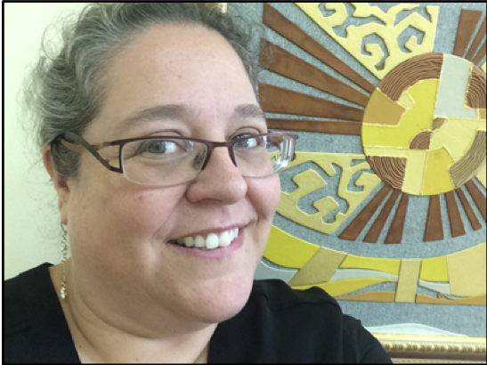

Dear friends!
Welcome to the Primary School of Miras International School, Nur-Sultan, where families take part and actively engage in their children’s learning journeys.
Our faculty and staff are qualified, experienced, and committed to providing excellent learning opportunities to meet the academic, social, and emotional needs of every student in a safe, nurturing, and welcoming environment.
As a PYP school, we provide opportunities for students to demonstrate all of aspects of being internationally minded. Miras students strive to be inquirers, thinkers, risk-takers and communicators. They try to show that they are knowledgeable, principled, caring, open-minded, well balanced and reflective. These attributes help students develop their awareness of local and global issues. Through the programme of inquiry, students channel the acquisition and application of knowledge and skills into authentic action. Students are expected to demonstrate positive attitudes towards people, the environment and learning.
As we recognize and value the importance of a strong home-school connection, we warmly welcome our parents to become involved and participate in our activities and their child’s education.
Welcome to Miras!
Péloquin Jeanne Natalie
Primary School Principal